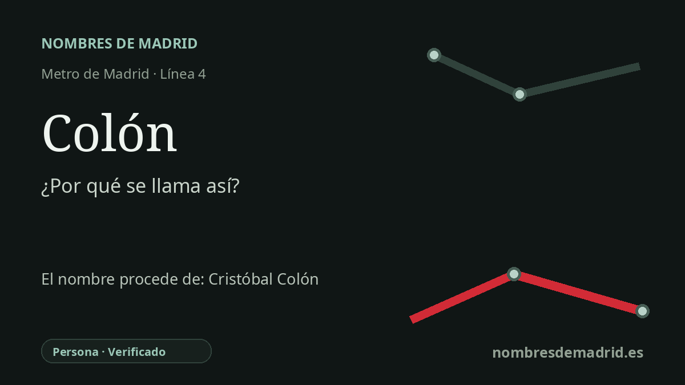

Publicado el · Investigación de Nombres de Madrid · Cómo verificamos cada origen · 5 fuentes consultadas
Respuesta rápida
La estación de Colón debe su nombre a la plaza de Colón, dedicada a Cristóbal Colón. La parada abrió en la línea 4 en 1944 junto a uno de los espacios conmemorativos más destacados de Madrid.
La historia del nombre
La estación de Colón toma su nombre de la plaza de Colón, el gran espacio urbano situado junto a la parada. La plaza está dedicada expresamente a Cristóbal Colón, de modo que el nombre de la estación es la forma breve, propia del transporte, del topónimo urbano que la rodea.
El monumento público explica por qué ese nombre tiene tanta presencia en esta zona de Madrid. A finales del siglo XIX se impulsó un monumento conmemorativo para la plaza: Arturo Mélida proyectó y labró el pedestal neogótico, y Jerónimo Suñol realizó la estatua de Colón en mármol de Carrara. La obra se terminó en 1885, aunque su entrega oficial a la ciudad se retrasó hasta el 12 de octubre de 1892, fecha simbólica del cuarto centenario del viaje de 1492.
La estación de metro llegó después. Colón abrió el 23 de marzo de 1944 como una de las ocho estaciones del primer tramo independiente de la línea 4 entre Argüelles y Goya. Ese recorrido pasaba por calles como Génova y Goya, y la nueva parada adoptó el nombre de la plaza ya consolidada en superficie.
La plaza ha cambiado varias veces de forma y usos. El solar de la antigua Casa de la Moneda se transformó en los Jardines del Descubrimiento, el monumento se desplazó durante la remodelación de los años setenta, se planearon instalaciones subterráneas como el Centro Cultural de la Villa bajo la plaza, y en 2009 el monumento a Colón volvió al centro de la glorieta.
La etimología, por tanto, está bien fundada, pero conviene precisar algunos datos. La estación pertenece a la línea 4 de Metro; no es una estación de la línea 8. Además, el monumento no debe atribuirse solo a Suñol: Suñol hizo la estatua, mientras que Mélida fue responsable del proyecto y del pedestal.